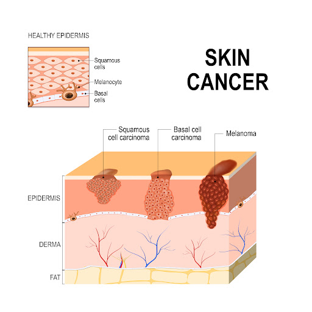

Medica Chat
Hi. This is Medica chatbot. How can I help you?
Skin Cancer

Overview
Skin cancer — an abnormal growth of skin cells — usually appears on skin exposed to the sun. But this common type of cancer can also appear on areas of your body that aren’t normally exposed to the sun.
There are three main types of skin cancer: basal cell carcinoma, squamous cell carcinoma, and melanoma.
You can reduce your risk of skin cancer by limiting or avoiding exposure to ultraviolet (UV) light. Checking your skin for suspicious changes can help detect skin cancer early. Early detection of skin cancer gives you the best chance of successfully treating it.
Types
• Melanoma
• Squamous cell carcinoma of the skin
• Basal cell carcinoma
• Non-melanoma skin cancer
Symptoms Where skin cancer develops
• Basal cell carcinoma on fair skin
Basal cell carcinoma is a type of skin cancer that most often occurs on areas of skin exposed to the sun, such as the face. Basal cell carcinoma usually appears as a flesh-colored or pink bump.
• Squamous cell carcinoma of the skin
Sun-exposed areas, such as the lips and ears, are particularly susceptible to squamous cell carcinoma of the skin.
• Melanoma
The first sign of melanoma is often a mole that changes in size, shape or color. This melanoma shows color changes and an irregular barrier, both of which are warning signs of melanoma.
• Merkel cell carcinoma
Merkel cell carcinoma is a rare and aggressive type of skin cancer. It appears as a painless, flesh-colored or bluish-red nodule that grows on the skin.
Melanoma develops mainly on areas of skin exposed to the sun, including the scalp, face, lips, ears, neck, chest, arms and hands, and on the legs in women. But it can also form on areas that rarely see the sun — your palms, under your fingernails or toenails, or your genital area.
Skin cancer can affect people of all skin tones, including people with darker skin. When people with darker skin do get skin cancer, it often appears on areas that aren't usually exposed to the sun, such as the palms of your hands and soles of your feet.
Signs and symptoms of squamous cell carcinoma
Squamous cell carcinoma usually occurs on areas of your body that are exposed to the sun, such as your neck or face.
Squamous cell carcinoma may appear as:
• A pearly or waxy bump
• A flat, skin-colored lesion, or it may appear as a brown scar
• A bleeding or crusty sore that heals and then comes back
Signs and symptoms of squamous cell carcinoma of the skin
Squamous cell carcinoma of the skin most often occurs on areas of your body that are exposed to the sun, such as your face, ears and hands. People with darker skin are more likely to get squamous cell carcinoma on areas of your body that aren't often exposed to the sun.
Squamous cell carcinoma may appear as:
• A red, firm nodule
• A flat lesion with a scaly, scaly surface
Signs and symptoms of skin cancer
Skin cancer can occur anywhere on your body, whether in normal skin or in a mole that becomes cancerous. In men, skin cancer most often appears on the face or trunk. In women, this type of cancer most often appears on the lower legs. In both men and women, skin cancer can occur on skin that has not been exposed to the sun.
Skin cancer can affect people of any skin color. In people with darker skin, skin cancer tends to occur on the palms of the hands, soles of the feet, or under the fingernails or toenails.
Signs of skin cancer include:
• A large brown spot with other dark spots
• A mole that changes color, size, feel, or bleeds
• A small lesion with irregular borders and parts that appear red, pink, white, blue, or blue-black
• A painful lesion that itches or burns
• Dark lesions on the palms of the hands, soles of the feet, tips of the fingers or toes, or on the mucous membranes lining the mouth, nose, vagina, or anus
Signs and symptoms of less common types of skin cancer
Other less common types of skin cancer include:
• Kaposi's sarcoma. This rare type of skin cancer develops in the blood vessels of the skin and causes red or purple patches on the skin or mucous membranes.
• Kaposi's sarcoma mainly affects people with weakened immune systems, such as those with AIDS, and people who take medications that suppress their natural immunity, such as those who have had an organ transplant.
• Others who are at increased risk of Kaposi's sarcoma include young people who live in Africa or older people of Italian or Eastern European Jewish descent.
• Merkel cell carcinoma Merkel cell carcinoma causes firm, shiny nodules on or under the skin and in hair follicles. Merkel cell carcinoma most often appears on the head, neck, and trunk.
• Sebaceous gland carcinoma This uncommon and aggressive type affects the oil glands in the skin. Sebaceous gland cancer, which usually appears as a hard, painless nodule, can appear anywhere, but most occur on the eyelid, which is why many people mistake it for another eyelid condition.
Where skin cancer develops
Skin cancer begins in the cells that make up the epidermis, the outer layer of your skin. One type of skin cancer is called basal cell carcinoma, which begins in the basal cells. Basal cells are the cells that push older cells toward the surface of the skin. As new cells move toward the surface, they become squamous cells. Skin cancer that begins in the squamous cells is called squamous cell carcinoma of the skin. Melanoma is another type of skin cancer that begins in pigment cells called melanocytes.
Causes
Skin cancer occurs when errors (mutations) occur in the DNA of skin cells. The mutations cause the cells to grow out of control and form a mass of cancerous cells.
When to see a doctor?
Make an appointment with your doctor if you have signs or symptoms on your skin that worry you. Note that not all skin changes are caused by skin cancer. Your doctor will check your skin changes to determine the cause.